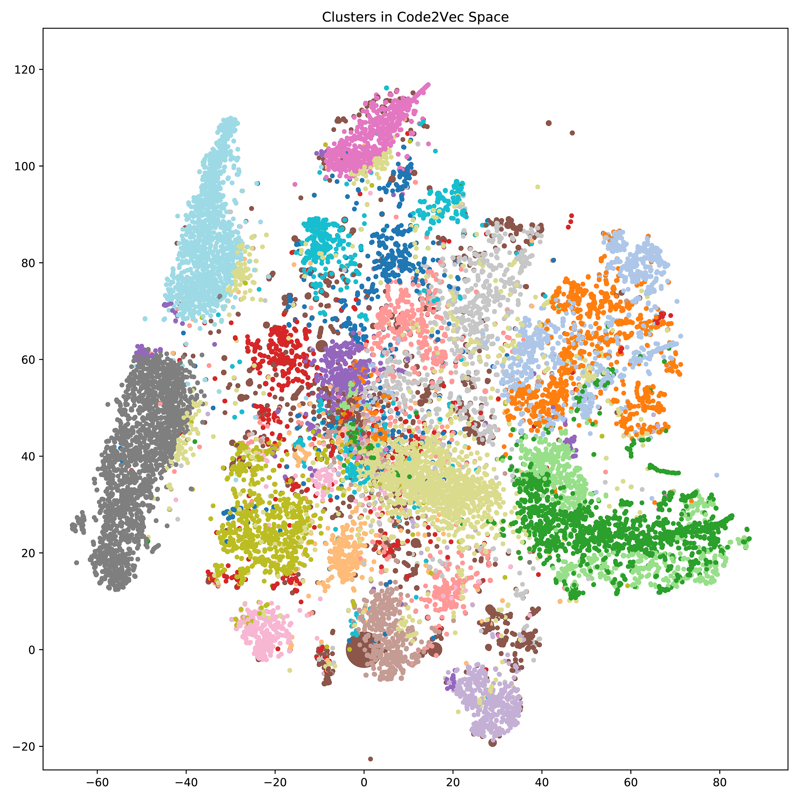
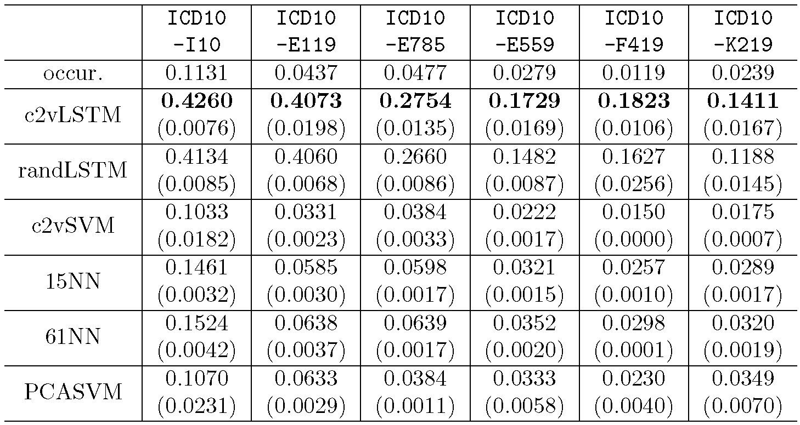

In this project, I work with Softheon Inc. to develop an algorithm to learn the embedding vectors of health diagnosis codes (ICD-9 and ICD-10) from large scale health insurance claims database, and use the embedding to construct feature representations of customers to make predictions of their future health insurance claims.
In a typical health insurance claim record dataset, every customer has a list of claim records. Each record has corresponding date, claim type, amount of claim, and any diagnosis and lab test results that were made. This resembles natural language corpus. If the diagnosis codes associated with claims are regarded as a code vocabulary, then claim records from different people provide contextual information among the codes. Some conditions are likely to occur on the same person within a short period of time, and some conditions can be caused by others. This information can be learned in a self-supervised manner similar to Word2Vec. We call this method Code2Vec. The learned embeddings capture the correlation among different codes, and can be used as a compact representation in many downstream applications.
|
The cosine similarity among the embedding vectors of diagnosis codes implies their relations. If two conditions can be caused by the same risk factor, or one is the pre-condition of the other, they will appear closer in the record, and thus their embedding vectors will be similar. As case study, the top-5 similar codes of ICD10-I10 (essential hypertension), ICD10-E119 (type 2 diabetes mellitus
without complications), ICD10-E785 (hyperlipidemia, unspecified), ICD10-E559
250 (vitamin D deficiency, unspecified), ICD10-F419 (anxiety disorder, unspecified),
ICD10-K219 (gastroesophageal reflux disease without esophagitis) are analysed.
The similarity analysis of the first 3 codes indicates that hypertension, type 2 diabetes, and hyperlipidemia are closely related, forming a cluster in the code vector space. This is explainable, because all these 3 types of diseases can be caused by similar unhealthy life styles, including excess intake of sugar and fat, lack of exercise, and obesity. And these 3 conditions are very common among American adults. Within this cluster there are other codes. Usage of hypoglycemic drugs and insulin is the most common treatment for diabetes. Hypertension, diabetes, and hyperlipidemia all rise the risk of atherosclerosis. The vector of Vitamin D deficiency is related to some other deficiency conditions. All of those can be caused by unhealthy diet and malnutrition. Anxiety disorder is close to other mental disorders, including depressive disorder and insomnia. Gastroesophageal reflux is similar to other upper digestive system conditions, including diaphragmatic hernia, gastritis, peptic ulcer, Barrett's esophagus, and dysphagia.
To evaluate the embedding in wider range, the codes are clustered into 20 clusters in the code vector space using spherical K-Means algorithm. For each cluster, the top-15 frequent diagnosis codes are selected for evaluating the quality of clustering. Codes in cluster 0 are mostly related to the brain, or conditions that are common among elder individuals. Codes in cluster 3 are mainly cutaneous conditions. Codes in cluster 6 are mostly related to the spine. Codes in cluster 9 are mainly conditions or screenings during pregnancy. Cluster 11 is all about eye conditions. Codes in cluster 12 are mental diseases diagnosis. Cluster 13 contains codes for foot-related injuries and conditions, while cluster 16 contains hand and arm conditions, as well as multiple injuries. The complete results are shown in this PDF.
|

|
The embedding vectors are reduced to 2-dimensional space by t-SNE for visualization. The codes belonging to the same cluster have the same color. The size of the dot represents the frequency of the code in the claim history records.

Since a structured and compact representation of diagnosis codes is available, a sequence of average code vectors in each claim can be used as the representation of a customer's claim history. This average code vector sequence is used to train a binary LSTM predictor, which has 1 LSTM unit and two linear prediction layer. The output of the predictor is the probability of the given customer to include the target diagnosis code in future claims. LSTM layer can further capture the relationships among the diagnosis codes in customers' claim history records. This information is already utilized by the Code2Vec model. But Code2Vec only focuses on contextual information, which is short-term and localized. LSTM can recognize more complex and long-term patterns in the records.
LSTM using code embeddings and 4 baseline prediction methods are compared in term of average precision: (1) Code2Vec-LSTM An LSTM predictor is trained using sequences of average-pooled Code2Vec vectors. If there is no valid code in a customer's history records, the sequence is set to a sequence of one zero vector. Since each sequence has different length, it is necessary to use zero vectors to pad the shorter sequences when forming batches. (2) Random-LSTM LSTM on random code vectors. The prediction model has the same architecture and hyperparameters as Code2Vec-LSTM. However, a random vector drawn from uniform distribution is assigned to each of the diagnosis code in the code vocabulary. This method purely replies on the LSTM unit to capture the temporal patterns in the claim history records. (3) Code2Vec-SVM SVM on Code2Vec representation. This method regards all the diagnosis codes in a customer's claim history records as a set. The representation vector for each customer is the average vector of all the Code2Vec vectors corresponding to the codes in the set. If there is not valid code in the customer's claim history records, the vector is set to a zero vector. A binary SVM with RBF kernel is trained on the representation. (4) KNN K nearest neighbors predictor on bag-of-code representation. Each customer's claim history records are represented by a bag-of-codes vector, which indicates what diagnosis codes have been included. K=15 and K=61 are used for experiments. (5) PCA-SVM SVM on bag-of-code representation after principle component analysis (PCA). The representation of the claim history records is the same as KNN method. PCA is used to reduce the dimension of the representation to 750. This preserves 74% of the variance. Then a binary SVM with RBF kernel is trained.

As a result, Code2Vec-LSTM achieves the highest AP on every prediction target codes. 2 SVM-based methods do not beat random guess. Nearest neighbor method achieves AP slightly higher than random guess. This may be due to the fact that the number of codes in a customer's records is much smaller than the number of all possible codes, making the feature vector extremely sparse. SVM is a kind of global classification model, it cannot train on such sparse data. Nearest neighbor only picks local patterns, so it can actually make some prediction. Since the claim history records data is essentially time sequential, both LSTM-based methods achieve much higher AP. Generally speaking, codes that have lower occurrence in the dataset are relatively more difficult to predict. This may be caused by the imbalanced training data, and the fact that very few positive samples make it very hard for predictors to recognize certain patterns in training data. The results from random-LSTM show that only using LSTM is sufficient to recognize temporal patterns in claim history records. But using a better representation learned from the records can further improve the prediction precision, especially for codes with lower occurrence. This may be explained by the assumption that for each customer, if random representation vectors are used, the vectors are randomly distributed in the vector space. But if Code2Vec is used, the vectors are more likely to be localized, since the representation is learned from the correlation of codes in a customer's records. This helps LSTM to learn. The results proves that Code2Vec embedding is a good representation. The combination of Code2Vec with other methods can improve the performance.
Back to Research